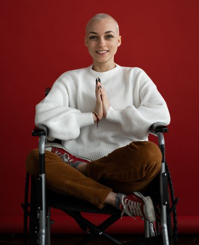

Target Audience
This site is geared toward those of any age who either have a disability themselves or who care for someone with a disability. These disabilities can be either physical, mental, or emotional.
Luca Vandenberg
Demographics
- Male
- 49 years-old
- Married
- Retinitis Pigmentosa - Legally Blind
Background
- Undergraduate Degree
- Works as an English teacher
- Uses a desktop computer
Interests
- Hiking
- Nature parks
- Creative writing
Needs
- An easy way to find outdoor activities
- Activities that do not require vision
- Locations with smooth terrain and Braille markings where applicable
Avis Winter
Demographics
- Female
- 18 years-old
- Single
- Ehlers–Danlos Syndrome
Background
- High School Graduate
- Preparing for college
- Uses a desktop computer, tablet, and smartphone
Interests
- Science
- Museums
- Programming
Needs
- Activities that do not require much walking
- Locations with a ramp or handrails
- Locations with smooth terrain and plenty of places to sit
Scenarios
- How long is each hiking trail and are there places to rest along the way?
- Which activities and locations are approved for wheelchair users?
- What will the UV index and air pollution levels be at today in Preston?
- What group activities are there for autistic children?
- Are there any sports teams in the area for people who have my disability?